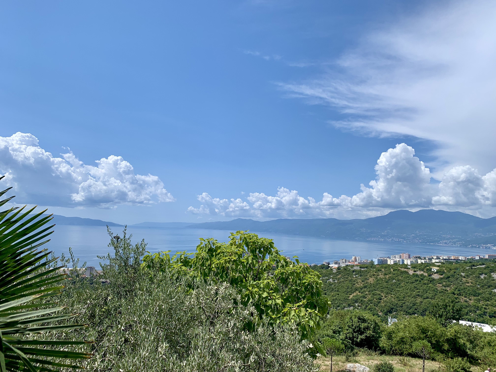

<!DOCTYPE html>
<html style="background-color:#C2DEDC ;"></html>
<html lang="en">
<head>
    <meta charset="UTF-8">
    <meta http-equiv="X-UA-Compatible" content="IE=edge">
    <meta name="viewport" content="width=device-width, initial-scale=1.0">
    <title>Sunny and Bright</title>
    
</head>

<body>
    <h1>Get to know your Airbnb</h1> 
    <style>h1{color:rgb(41, 41, 117)}
    </style>
    
    <h2>Check-in & Check-out</h2>
  <style>h2{color:rgb(41, 41, 117)}</style>

Check-in <br>
The apartment will be ready for you after 2 o'clock. <br> 
     We will put a key in a small key locker next to the door. The code to open it will be sent to you prior your arrival.<br>
Every guest staying in Croatia must be registered with the Croatian Tourist Board through the eVisitor information system for registration and de-registration of tourists.<br>
More about that you can read <a href="./IMG_2052.jpeg">here:</a>

For that purpose we left you a paper form to fill it out with your personal details. <br>
Once you completed the form please put it in the mail box on the terrace. Thank you!
  </P>
    <p>Check-out<br>
        Please check out by 10 am. <br>
        Checking out by this time ensures  that we have enough time to clean and get the apartment ready for our next guests.<br>If the upcoming guests schedule allows us more time, we can arrange that you leave later, but please ask that in advance.<br>
        When you check out please lock the apartment and put the key back into the key locker. 
          
        </p>
        <hr>
    <h2>House roules</h2>
    <p> 
        We have created this house rules sheet to ensure that you can fully enjoy your stay in our Airbnb rental while also respecting the rental and the neighborhood. 
    
    
        We kindly ask you: <br> 
        <ul>
            <li>Treat our Airbnb rental as if it was your own property.</li>
            <li>No smoking. If you smoke, please smoke on the terrace or in the garden</li>
            <li>No parties or events</li>
            <li>Guests are expected to be considerate of other guests and neighbours by keeping noise levels down during nighttime hours.
            </li>
            <li> No pets are allowed.</li>
            <li>No additional guests are allowed on the property beyond those listed on the reservation.</li>
              </ul>
We appreciate for compliance with the House rules.<br>
We love our airbnb family business and we aim to provide our guests with the best experience possible during their stay.</p>
<hr>
        
        <h2>Good to know:</h2>
        <p>
            <ul>
              <li> <h4>Water</h4>
            </li>
            Tap water is safe to drink.<br>
            Rijeka’s water is tested to be of exceptional quality and drinkability for its physical and chemical properties.
     <li>
        <h4>Waste disposal</h4></li>
        <style>h4{color:rgb(41, 41, 117)</style>
        Garbage containers for 
        mix waste, metal, plastic and tetra packages, paper and cardboard, are down on the main street.<br>
    Please recycle. </p>
        <li><h4>Water heater</li></h4>
Water heater needs to be turned on all the time of your visit in order to provide hot water in the bathroom. <br> It is the first button next to the wall.<br>
<li><h4>Toilet bowl</li></h4>

Our apartment has sensitive plumbing system so PLEASE flush only toilet paper and what nature provides.<br>
 For everything else kindly use garbage bin provided.


<li><h4>BBQ area</li></h4>
BBQ area is common area and you are more than welcome to use it. <br>
You will find it on the upper terrace when you climb up the concreate stairs.

<li><h4>Parking</li></h4>
Although parking in our street is free of charge residents have some places where they usually park their cars. <br> The best place to park is under the stone wall bellow our garden.

<li>
    <h4>Safety</h4>
        <p>Please remember to lock up when you leave and at night. <br>
        Although our rental is in a very safe neighborhood, it is better to be on the safe side.<br>
        When you see that rain or a storm are coming, please close windows
        and in case of major thunderstorm kindly plug out the TV from the socket. <br>
        <br>
        Rijeka is a very safe city, even at night. Although there is little street crime, during your walks -keep an eye on your personal belongings.
        </p>
  
   </li>
    </ul>
</p>

    <hr />

    <p>Our priority is to ensure your complete privacy throughout your stay, while also remaining readily available to provide any assistance you may need.<br>
Please dont hesitate to contact us. <br>
 We wish you a wonderful time in Rijeka!</p>
    
    <p>Sunny and Bright</p>
</body>
</html>